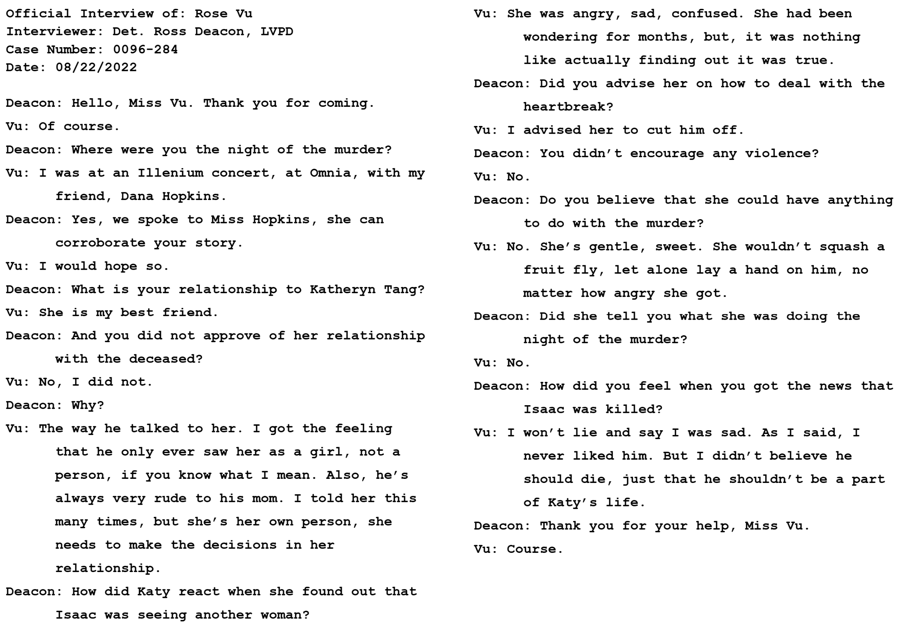
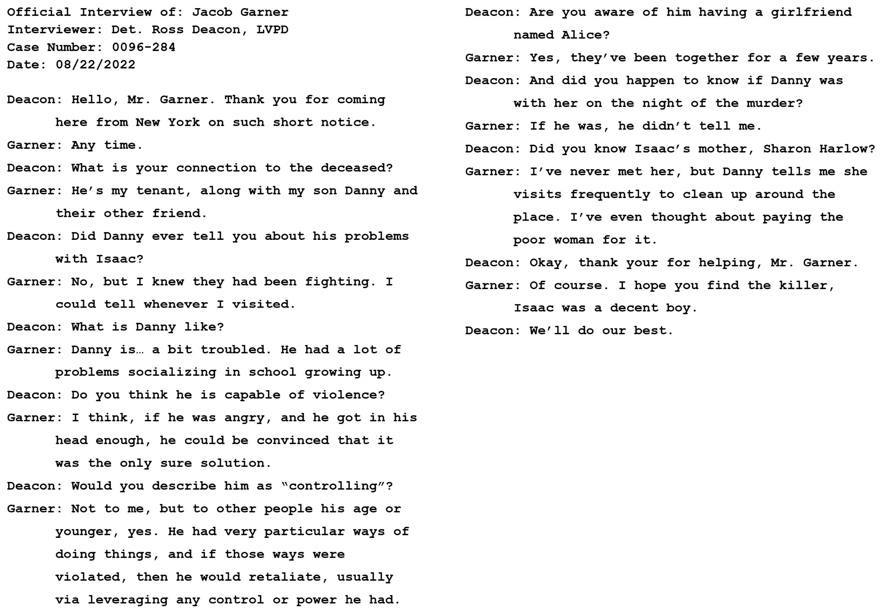
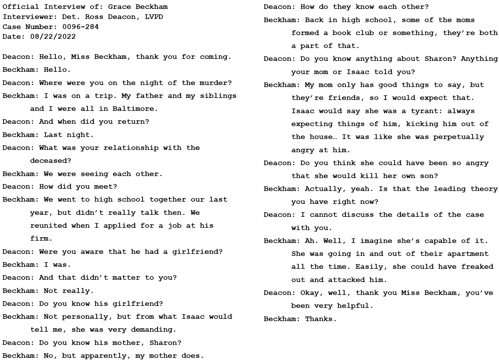
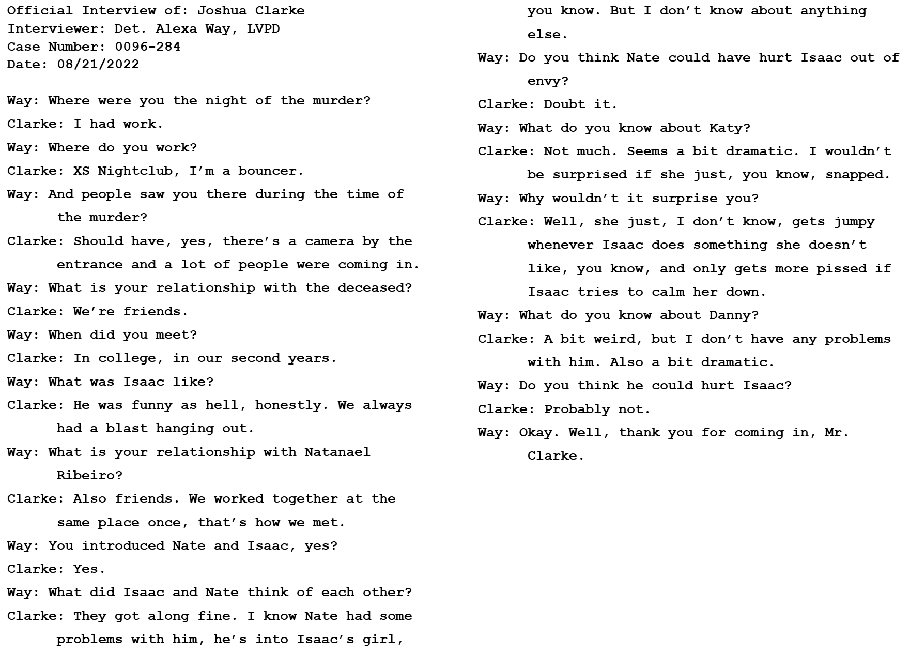
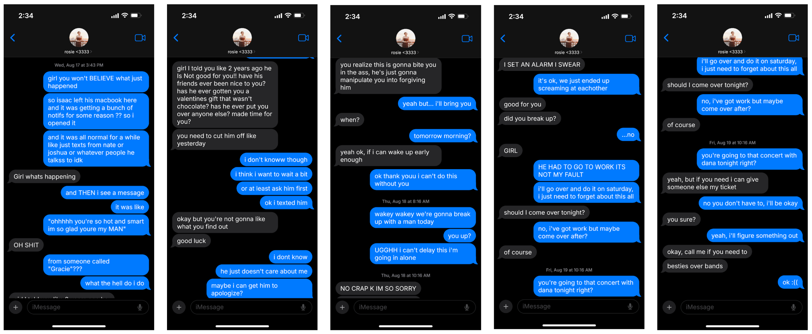
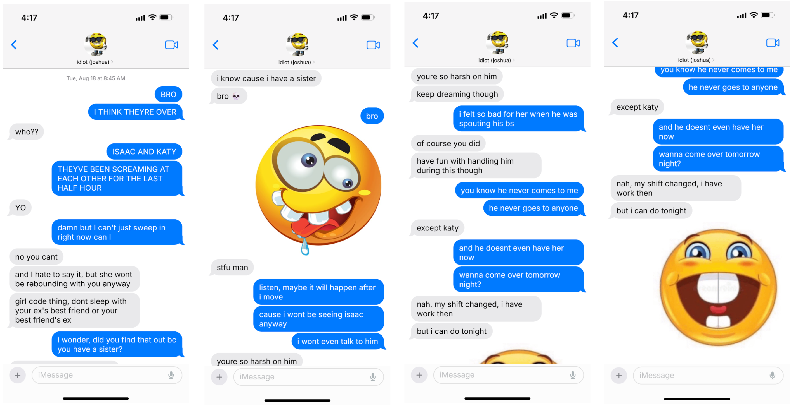
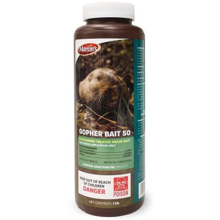

Weapon: Danny Garner's Baseball Bat

This bat belonged to Danny during his little league days. It was found in the trash room in the roommates' apartment. It has the blood of Issac Harlow on it, as well as recent fingerprints matching Danny Garner and Nate Ribeiro.
1: Medical Examiner's Report

Medical Examiner Chuck Rivers evaluated Isaac's body. He found that Isaac was killed by two blows to the head, and his system contained a chemical called Strychnine (Commonly found in rat and rodent poisons).
[insert transcript here]
2: Texts between Isaac and Katy

Found on Isaac's phone.
[insert transcript here]
3: Texts between Isaac and Nate

Found on Isaac's phone.
[insert transcript here]
4: Texts between Isaac and Danny

Found on Isaac's phone.
[insert transcript here]
5: Texts between Isaac and Sharon

Found on Isaac's phone.
[insert transcript here]
6: Katy's Statement

Official Interview of Katy Tang conducted by Detective Alexa Way.
Official Interview of: Katheryn Tang
Interviewer: Det. Alexa Way, LVPD
Case Number: 0096-284
Date: 08/21/2022
Way: What were you doing on the night of the murder?
Tang: I was at home, watching a movie.
Way: Were you with anyone?
Tang: No.
Way: So, you were alone, with no one to confirm your whereabouts?
Tang: Yes.
Way: What was the nature of your relationship with the deceased?
Tang: We were dating, for about 2 and a half years.
Way: And how did you feel about him?
Tang: Conflicted. Early on, he was amazing. He would shower me in compliments, fun experiences, everything. But about 8 months ago, he started to act differently. Like he was tired of me. I tried to keep the relationship afloat, but, he was growing more and more distant, especially outside of events like Valentines or my birthday.
Way: Were you aware that he was seeing another woman?
Tang: I was.
Way: And how did you react to that?
Tang: I was angry. Very angry. But also not surprised. I had suspected something was up.
Way: When was the last time you saw the deceased?
Tang: Thursday morning [The 18th].
Way: And what happened?
Tang: We yelled at each other. He called me… a lot of things. Like that I was entitled, and had a bad temper, and that I was jealous. And worse. I told him he was in the wrong, for all of it.
Way: Did you consider retaliating violently against him?
Tang: No, I would never. I hate… hated him. But I wouldn’t hurt him, I especially wouldn’t kill him.
Way: Do you know who would?
Tang: I know Rosie never liked him, but I can’t imagine she would hurt him, not this seriously.
Way: Anyone else?
Tang: No, I can’t think of anyone.
Way: What do you know about Isaac’s roommates, Daniel Garner and Natanael Ribeiro?
Tang: I know next to nothing about Danny. I’ve talked to him, yes, but he doesn’t spend much time with Isaac and he never had much reason to socialize with me and not Isaac. He seems to spend a lot of time alone. Nate is very nice, he’s funny and treats me well. He and Isaac’s other friend, Joshua, are very close.
Way: Do you know Isaac’s mother, Sharon Harlow?
Tang: Yeah, I’ve met her a few times.
Way: What was the dynamic between her and her son?
Tang: Oh, he was very hostile to her. He made her out to be a tyrant, kind of, but the times I’ve talked to her she was perfectly nice.
Way: Did you get the sense that she had a bad temper?
Tang: No, not at all.
Way: Would you be comfortable submitting your phone as evidence? It will be given back after we retrieve any relevant information.
Tang: Oh… yeah, I guess. I have nothing to hide.
Way: Okay, thank you for your time, Miss Tang.
Tang: No problem.
7: Nate's Statement

Official Interview of Nate Ribeiro conducted by Detective Alexa Way.
Official Interview of: Natanael Ribeiro
Interviewer: Det. Alexa Way, LVPD
Case Number: 0096-284
Date: 08/20/2022
Way: Where were you last night?
Ribeiro: I know it’s not a good story, but I promise you, I was in my room playing Call of Duty. I usually wear a headset and the sounds can be loud and so that’s why I guess I must’ve missed any screaming or noises? I swear, I can’t prove it but-
Way: Thank you, Mr. Ribeiro. What was your relationship with the deceased?
Ribeiro: He was my friend, we met through our other friend Joshua a couple years back and when Isaac was looking for a place to stay after the lockdowns ended, I had just moved in with Danny. We had a spare room so I suggested he move in too.
Way: And what was he like as a friend and roommate?
Ribeiro: He… he was very funny, we played a lot of games together, and we support some of the same, like, soccer teams and stuff. But he was all jokes. Nothing was ever serious with him. He was never sensitive or supportive in anything. Even Joshua, who’s also sort of like that, I could still go to him if I needed something. As a roommate, he clashed with Danny a lot, mostly on doing chores and things, which, to be honest, Danny deserved. But Isaac liked to retaliate against him, usually by being annoying or pulling little pranks against him, and he would always get me to join him for those.
Way: So it seems like you didn’t like Isaac very much.
Ribeiro: Don’t get me wrong, when it was a fun time, he was fun. It’s just when someone was angry, or sad, or hurt, he would disappear. Even with his girlfriend.
Way: What do you know about his relationship with his girlfriend?
Ribeiro: I thought they were going fine, until Katy came over a couple days ago talking about how he cheated and was trying to play it off as nothing. They were yelling at each other a lot.
Way: What’s your opinion of Katy?
Ribeiro: She’s… well, I guess since he’s dead, I’ll just say it. I’ve liked her for years. We went to the same college, and I remember seeing her around. I don’t think Isaac was good enough for her.
Way: Were you envious of Isaac?
Ribeiro: Yeah, in a way. But I wasn’t going to try to break them up.
Way: Walk me through when you found Isaac’s body.
Ribeiro: He… I had gone to the kitchen to get a snack, and I noticed that his bedroom door was open. He always closes it if he’s in there, so I was confused. I went in to see if he was sleeping, and I saw some blood on the floor by his closet. I opened it up and, well, he was laying there…
Way: That must have upset you.
Ribeiro: It did. I haven’t slept, obviously. And I don’t think I will.
Way: Thank you for coming, Mr. Ribeiro. Would you be okay submitting your phone for evidence? It will be given back when we’ve collected anything relevant.
Ribeiro: Oh… um, okay.
Way: Thank you.
8: Danny's Statement

Official Interview of Danny Garner conducted by Detective Ross Deacon.
[insert transcript here]
9: Sharon's Statement

Official Interview of Sharon Harlow conducted by Detective Ross Deacon.
[insert transcript here]
10: Katy's Friend Rosie's Statement

Official Interview of Rosie Vu conducted by Detective Ross Deacon.
[insert transcript here]
11: Danny's Father Jacob's Statement

Official Interview of Jacob Garner conducted by Detective Ross Deacon.
[insert transcript here]
12: Isaac's Fling Grace's Statement

Official Interview of Grace Beckham conducted by Detective Ross Deacon.
[insert transcript here]
13: Isaac and Nate's Friend Joshua's Statement

Official Interview of Joshua Clarke conducted by Detective Alexa Way.
[insert transcript here]
14: Texts between Katy and her Friend Rosie

Found on Katy's phone, which was volunteered to the police.
[insert transcript here]
15: Texts between Nate and he and Isaac's Friend Joshua

Found on Nate's phone, which was volunteered to the police.
[insert transcript here]
16: Strychnine Rodenticide

A bottle of gopher bait/killer found in the roommates' kitchen. It has recent fingerprints on it belonging to Sharon Harlow, Isaac Harlow, and Danny Garner.